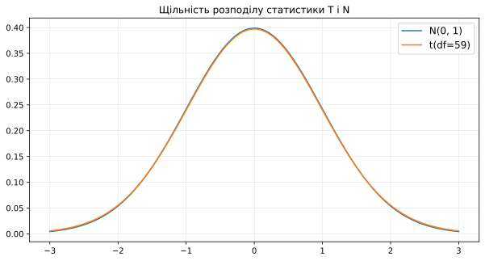
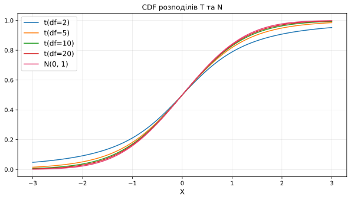

X = numpy.array([6.9, 6.45, 6.32, 6.88, 6.09, 7.13, 6.76])
print(f"Середній час завантаження в СУБД: {round(numpy.mean(X), 2)}")Середній час завантаження в СУБД: 6.65Прикладний статистичний аналіз
КНУ імені Тараса Шевченка, ФІТ
У нашій компанії хочуть перейти з однієї СУБД на іншу. Головним критерієм для переходу є «витрачений час у добі на завантаження нових даних». Якщо раніше для щоденного оновлення бази було потрібно в середньому 10 годин, то хочеться знайти нову СУБД, у якій усе це відбуватиметься швидше, ніж за 7 годин.
Для цього було прийнято рішення перенести всі дані на нову тестовану СУБД. Протягом одного тижня щодня ми порахуємо час завантаження даних, і якщо в середньому на оновлення витрачатиметься менше 7 годин, то ми повністю перейдемо на нову СУБД. Ваше завдання придумати, як перевірити гіпотезу про те, що нова СУБД краща за стару.
Вийшла вибірка:
[6.9, 6.45, 6.32, 6.88, 6.19, 7.13, 6.76] — час завантаження в нову БД по днях у годинах.X = numpy.array([6.9, 6.45, 6.32, 6.88, 6.09, 7.13, 6.76])
print(f"Середній час завантаження в СУБД: {round(numpy.mean(X), 2)}")Середній час завантаження в СУБД: 6.65Тоді треба лише порахувати таку статистику: \[\sqrt{n}\dfrac{\overline X - 7}{\sqrt{\sigma^2}} \overset{H_0}{\sim} \mathcal{N}(0, 1)\]
Важливо
Але є одна проблема: ми не знаємо \(\sigma^2\)!
\(\widehat{\sigma^2} =S^2 = \dfrac{1}{n - 1}\underset{i=1}{\overset{n}{\sum}}(X_i - \overline X)^2\)
Давайте введемо новий критерій \(t\)-критерій, у якому ми підставимо:
Залишилося перевірити: Чи правда, що при \(H_0\) розподіл статистики T — стандартний нормальний?
def sample_statistics(number_of_experiments, statistic_function, sample_size, sample_distr):
"""
Функція для генерації вибірки деякої статистики statistic_function, побудованої за вибіркою з розподілу sample_distr.
Повертає вибірку розміру number_of_experiments для statistic_function.
Параметри:
- number_of_experiments: кількість експериментів, у кожному з яких ми порахуємо statistic_function
- statistic_function: статистика, яка приймає на вхід вибірку з розподілу sample_distr
- sample_size: розмір вибірки, яка подається на вхід statistic_function
- sample_distr: розподіл початкової вибірки, за якою рахується статистика
"""
statistic_sample = []
for _ in range(number_of_experiments):
# генеруємо number_of_experiments раз вибірку
sample = sample_distr.rvs(sample_size)
# рахуємо статистику
statistic = statistic_function(sample)
# зберігаємо
statistic_sample.append(statistic)
return statistic_samplenumpy.random.seed(8)
sample_size = 7
M = 100000
sample_distr = norm(loc=5, scale=3) # Нехай вибірка з цього розподілу
T_X = lambda sample: numpy.sqrt(sample_size) * (numpy.mean(sample) - sample_distr.mean()) / numpy.sqrt(numpy.var(sample, ddof=1)) # або numpy.std
Z_X = lambda sample: numpy.sqrt(sample_size) * (numpy.mean(sample) - sample_distr.mean()) / sample_distr.std()
samples = {
"T(X)": sample_statistics(
number_of_experiments=M, statistic_function=T_X,
sample_size=sample_size, sample_distr=sample_distr),
"Z(X)": sample_statistics(
number_of_experiments=M, statistic_function=Z_X,
sample_size=sample_size, sample_distr=sample_distr)
}
pyplot.figure(figsize=(22, 5))
for i, name in enumerate(["T(X)", "Z(X)"]):
pyplot.subplot(1, 2, i + 1)
current_sample = samples[name]
l_bound, r_bound = numpy.quantile(current_sample, [0.001, 0.999])
x = numpy.linspace(l_bound, r_bound, 1000)
pyplot.title(f'Розподіл статистики {name}, sample size={sample_size}', fontsize=12)
distplot(current_sample, label='Емпіричний розподіл')
pyplot.plot(x, norm(0, 1).pdf(x), label='$\mathcal{N}(0, 1)$')
pyplot.legend(fontsize=12)
pyplot.xlabel(f'{name}', fontsize=12)
pyplot.xlim((l_bound, r_bound))
pyplot.ylabel('Щільність', fontsize=12)
pyplot.grid(linewidth=0.2)
pyplot.show()Важливо
\(S^2\) — це випадкова величина!
Давайте подивимося на розподіл \(\sqrt{S^2}\) на все тому ж нормальному розподілі.
numpy.random.seed(42)
S2 = lambda sample: numpy.std(sample, ddof=1)
S2_sample = sample_statistics(
number_of_experiments=M, statistic_function=S2,
sample_size=sample_size, sample_distr=sample_distr
)
pyplot.figure(figsize=(10, 5))
pyplot.title('Розподіл $\sqrt{S^2}$', fontsize=12)
distplot(S2_sample, label='Емпіричний розподіл')
pyplot.legend(fontsize=12)
pyplot.xlabel('$\sqrt{S^2}$', fontsize=12)
pyplot.ylabel('Щільність розподілу', fontsize=12)
pyplot.grid(linewidth=0.2)
pyplot.show()Висновок
\(T(X) \overset{H_0}{\nsim} \mathcal{N}(0, 1)\) 😭
Нехай \(X_1 \ldots X_n \sim \mathcal{N}(\mu, \sigma^2)\)
Нехай \(\xi_1 \ldots \xi_n \sim \mathcal{N}(0, 1)\). Тоді \(\eta=\xi_1^2 +\ ... +\xi_n^2 \sim \chi^2_n\), — \(\chi^2\) розподіл з \(n\) ступенями свободи.
Тоді \(\underset{i=1}{\overset{n}{\sum}}\left(\xi_i - \overline \xi \right)^2 \sim \chi^2_{n-1}\). Дов-ня 🫠
\(S^2_X = \dfrac{1}{n - 1}\underset{i=1}{\overset{n}{\sum}}(X_i - \overline X)^2\)
\(\xi_i := \dfrac{X_i - \mu}{\sigma} \sim \mathcal{N}(0, 1)\). Тоді \(S^2_{\xi} = \dfrac{1}{\sigma^2}S^2_X\).
А отже \(\dfrac{(n - 1)\cdot S^2_X}{\sigma^2} = \underset{i=1}{\overset{n}{\sum}}\left(\xi_i - \overline \xi \right)^2 \sim \chi^2_{n-1}\)
Нехай \(\xi \sim \mathcal{N}(0, 1), \eta \sim \chi^2_k\) і \(\xi\) з \(\eta\) незалежні. Тоді статистика \(\zeta = \dfrac{\xi}{\sqrt{\eta/k}} \sim t_{k}\) — з розподілу Ст’юдента з \(k\) ступенями свободи.
\(T = \sqrt{n}\dfrac{\overline X - \mu_0}{\sqrt{S^2}} \sim t_{n - 1}\) — взята з розподілу Ст’юдента з \(n - 1\) ступенем свободи.
X = numpy.array([6.9, 6.45, 6.32, 6.88, 6.09, 7.13, 6.76])
t_stat = numpy.sqrt(sample_size) * (numpy.mean(X) - 7) / numpy.sqrt(numpy.var(X, ddof=1))
print(f"t-статистика: {round(t_stat, 2)}")t-статистика: -2.52p-значення: 0.0225Довірчий інтервал — множина \(m\): тест не відхиляє \(H_0: \mu = m\) на рівні значущості \(\alpha\).
Нехай \(\mu\) — істинне середнє вибірки. Ми також знаємо, що за \(H_0: \sqrt{n}\dfrac{\overline X - m}{\sqrt{S^2}} \sim t_{n - 1}\).
Нас цікавлять такі \(m\), що: \(\left\{-t_{n-1, 1 - \frac{\alpha}{2}} < \sqrt{n}\dfrac{\overline X - m}{\sqrt{S^2}} < t_{n-1, 1 - \frac{\alpha}{2}} \right\}\), у цьому випадку критерій не відкинеться.
Розпишемо, щоб у центрі залишилося тільки \(m\):
\[\left\{\overline X - \dfrac{t_{n - 1, 1 - \alpha/2} \sqrt{S^2}}{\sqrt{n}} < m < \overline X + \dfrac{t_{n - 1, 1 - \alpha/2} \sqrt{S^2}}{\sqrt{n}}\right\}\]
\[CI_{\mu} = \left(\overline X \pm \dfrac{t_{n - 1, 1 - \alpha/2} \sqrt{S^2}}{\sqrt{n}} \right),\]
де \(S^2 = \dfrac{1}{n - 1}\underset{i=1}{\overset{n}{\sum}}(X_i - \overline X)^2\)
Класичне визначення довірчого інтервалу:
Довірчим інтервалом для параметра \(\theta\) рівня довіри \(1 - \alpha\) є пара статистик \(L(X), R(X)\), таких, що \(P(L(X) < \theta < R(X)) = 1 - \alpha\).
\[ \begin{align} &T(X) = \sqrt{n}\dfrac{\overline X - \mu}{\sqrt{S^2}} \sim t_{n - 1} \Rightarrow \\ &P\left(-t_{n - 1, 1-\alpha/2} < \sqrt{n}\dfrac{\overline X - \mu}{\sqrt{S^2}} < t_{n - 1, 1-\alpha/2} \right) = 1 - \alpha \Leftrightarrow \\ &P\left(\overline X - \dfrac{t_{n - 1, 1 - \alpha/2} \sqrt{S^2}}{\sqrt{n}} < \mu < \overline X + \dfrac{t_{n - 1, 1 - \alpha/2} \sqrt{S^2}}{\sqrt{n}} \right) = 1 - \alpha \end{align} \]
\[CI_{\mu} = \left(\overline X \pm \dfrac{t_{n - 1, 1 - \alpha/2} \sqrt{S^2}}{\sqrt{n}} \right)\]
sample = norm(loc=10, scale=2).rvs(100)
# sem -- стандартна помилка середнього, sem = sqrt(S^2)/sqrt(n)
left_bound, right_bound = t.interval(confidence=0.95, loc=numpy.mean(sample), df=len(sample)-1, scale=sem(sample))
print(f"CI = [{round(left_bound, 2)}, {round(right_bound, 2)}]")CI = [9.93, 10.73]📈 Задача
Ви придумали ідею для стартапу, де кур’єри збирають замовлення для клієнтів і відвозять їм додому. Маржа від замовлення у вашому стартапі — X ₴, а вартість роботи кур’єра — 1k ₴. Специфіка вашого стартапу така, що є великий ризик повернення без оплати. З урахуванням вартостей, інвестори готові проспонсорувати вам інфраструктуру і залучення клієнтів, якщо ви покажете, що у вас буде прибуток.
З даних у вас є принесені гроші від кожного користувача. Іноді позитивна величина, іноді негативна.
Дані:
[-718. 657. 693. 391. -644. 421. 265. -108. 1956. -684. -753. -725.
-341. -796. -662. 257. -719. 5184. -739. -291. -427. 283. 10. 500.
-713. -458. 60. -756. 333. -537. -744. 254. -555. -780. -329. -560.
936. -742. -784. 213. 299. -678. -736. 24. 264. 293. -490. 2667.
-605. -799. -797. -743. 347. -718. -508. -766. 1395. 392. -62. -510.
237. -785. -745. -781. 3232. -727. 204. 2987. 244. -757. -78. 10.
364. -7. -440. 520. 203. 282. 685. 589. -724. -48. 263. -457.
-796. -708. -798. 488. -677. -690. 786. -770. 659. -679. -309. -731.
288. 1047. -796. -721.]average profit = 58.4868
n = 5000Чи можемо ми використати нормальний розподіл для наближення?
Отже, якщо вибірка велика, то ми можемо вважати, що \(T(X) \overset{H_0}{\sim} \mathcal{N}(0, 1)\).
Перевіримо наш критерій на великих вибірках:
numpy.random.seed(8)
sample_size=2000
M = 10000
sample_distr = expon(loc=5, scale=300)
T_X = lambda sample: numpy.sqrt(sample_size) * (numpy.mean(sample) - sample_distr.mean()) / numpy.std(sample, ddof=1)
T_sample = sample_statistics(
number_of_experiments=M, statistic_function=T_X,
sample_size=sample_size, sample_distr=sample_distr)
pyplot.figure(figsize=(10, 5))
l_bound, r_bound = numpy.quantile(T_sample, [0.001, 0.999])
x = numpy.linspace(l_bound, r_bound, 1000)
pyplot.title(f'Розподіл статистики T(X), sample size={sample_size}', fontsize=12)
distplot(T_sample, label='Емпіричний розподіл')
pyplot.plot(x, norm(0, 1).pdf(x), label='Експоненціальний розподіл')
pyplot.legend(fontsize=12)
pyplot.xlabel(f'{name}', fontsize=12)
pyplot.xlim((l_bound, r_bound))
pyplot.ylabel('Щільність', fontsize=12)
pyplot.grid(linewidth=0.2)
pyplot.show()Ми бачимо, що розподіли збіглися!
А на нормальному розподілі, де вперше були відмінності на маленькій вибірці?
numpy.random.seed(8)
sample_size=2000
M = 30000
sample_distr = norm(loc=5, scale=300)
T_X = lambda sample: numpy.sqrt(sample_size) * (numpy.mean(sample) - sample_distr.mean()) / numpy.std(sample, ddof=1)
T_sample = sample_statistics(
number_of_experiments=M, statistic_function=T_X,
sample_size=sample_size, sample_distr=sample_distr)
pyplot.figure(figsize=(10, 5))
l_bound, r_bound = numpy.quantile(T_sample, [0.001, 0.999])
x = numpy.linspace(l_bound, r_bound, 1000)
pyplot.title(f'Розподіл статистики T(X), sample size={sample_size}', fontsize=12)
distplot(T_sample, label='Емпіричний розподіл')
pyplot.plot(x, norm(0, 1).pdf(x), label='$\mathcal{N}(0, 1)$')
pyplot.legend(fontsize=12)
pyplot.xlabel(f'{name}', fontsize=12)
pyplot.xlim((l_bound, r_bound))
pyplot.ylabel('Щільність', fontsize=12)
pyplot.grid(linewidth=0.2)
pyplot.show()Тобто першого разу нам не пощастило, що розмір вибірки був маленьким
\[CI_{\mu} = \left(\overline X \pm \dfrac{z_{1 - \alpha/2} \sqrt{S^2}}{\sqrt{n}} \right)\]
sample = expon(scale=300).rvs(2000) # E sample = scale = 300
left_bound, right_bound = norm.interval(confidence=0.95, loc=numpy.mean(sample), scale=sem(sample))
print(f"CI = [{round(left_bound, 2)}, {round(right_bound, 2)}]")CI = [289.96, 316.15]left_bound, right_bound = norm.interval(confidence=0.95, loc=numpy.mean(profits), scale=sem(profits))
print(f"CI = [{round(left_bound, 2)}, {round(right_bound, 2)}]")CI = [14.04, 102.94]Так, виручка позитивна! Значить ми знайшли інвесторів для нашого стартапу 🫡
Для початку визначимося, коли який критерій краще використовувати?
df = 59
t_dist = t(df=df)
z_dist = norm(loc=0, scale=1)
x = numpy.linspace(-3, 3, 100)
pyplot.figure(figsize=(10, 5))
pyplot.title(f'Щільність розподілу статистики T і N', fontsize=12)
pyplot.plot(x, z_dist.pdf(x), label='N(0, 1)')
pyplot.plot(x, t_dist.pdf(x), label=f't(df={df})')
pyplot.legend(fontsize=12)
pyplot.grid(linewidth=0.2)
pyplot.show()
pvalue < alpha. У t-test pvalue \(\geq\) t’-test pvalue.pvalue = t_distr.cdf(x) або pvalue = norm_dist.cdf(x). Тож чим важчий хвіст у розподілу, тим більше p-value. А тепер подивимося на прикладі:df_array = [2, 5, 10, 20]
x = numpy.linspace(-3, 3, 100)
pyplot.figure(figsize=(10, 5))
pyplot.title(f'CDF розподілів T та N', fontsize=12)
for df in df_array:
t_dist = t(df=df)
pyplot.plot(x, t_dist.cdf(x), label=f't(df={df})')
z_dist = norm(loc=0, scale=1)
pyplot.plot(x, z_dist.cdf(x), c=red_pink, label='N(0, 1)')
pyplot.legend(fontsize=12)
pyplot.xlabel('X', fontsize=12)
pyplot.grid(linewidth=0.2)
pyplot.show()
Розподіл Стьюдента з нескінченністю ступенів свободи — це нормальний розподіл: \(t_{\infty} = \mathcal{N}(0, 1)\). Тому norm(0, 1).cdf(x) = t_distr(df=infinity).cdf(x) < t_distr(df=N).cdf(x).
Ми бачимо, що ми скрізь можемо використовувати \(t\)-test (а \(t'\)-test не завжди), і в разі маленьких вибірок він безпечніший. Тому \(t\)-test і став набагато популярнішим, ніж \(t'\)-test. Але \(t'\)-test на практиці може бути теж корисний:
У нас на сайті є послуги просування. Ми хочемо почати давати на них знижки, щоб залучити більше людей і почати більше заробляти. Для цього було вирішено провести AB тест: Одній половині користувачів ми не видали знижок, а в другій половині ми видали знижки всім новим користувачам. Треба зрозуміти, чи стали ми більше заробляти?
Цього разу у нас 2 вибірки \(A\) — контроль, і \(B\) — тест.
\[H_0: \mathbb{E} A = \mathbb{E} B \; \text{vs.} \; H_1: \mathbb{E}A < \mathbb{E} B\]
Тоді є 2 критерії залежно від наших знань про дисперсію:
\(\sigma^2_A = \sigma^2_B\).
Тоді:
\(\sigma^2_A \neq \sigma^2_B\).
Тоді:
Тоді в бій вступає нормальна апроксимація при великому розмірі вибірок, критерій T’-test:
scipy.stats.ttest_ind — 2-вибірковий t-test критерійCompareMeans — клас для побудови довірчих інтервалів у t-test.TtestResult(statistic=2.5645688722251325, pvalue=0.005237676356845092, df=1000.5367318148768)MDE — це таке істинне значення ефекту, що наш шанс його виявити дорівнює \(1-\beta\) при використанні нашого критерію.
Від чого залежить MDE?
Для початку визначимося з гіпотезою, що перевіряється:
Позначимо
Тепер ми знаємо, що
Нам треба знайти \(MDE=m\), таке, що:
\[\text{MDE} = (z_{1 - \alpha} + z_{1 - \beta}) \cdot \sqrt{\dfrac{S^2}{N}}\]
де \(z_{1 - \alpha}\) та \(z_{1 - \beta}\) — квантилі розподілу \(\mathcal{N}(0, 1)\).
\(N = 1000\), \(\alpha=5\)%, \(1-\beta=80\)%, а як дізнатися \(S^2\)?
На практиці є 3 способи:
Для нас це занадто великий MDE: хочеться, щоб він був \(\leq\) 100, ми припускаємо, що це ймовірніший істинний ефект, виходячи з досвіду.
Давайте тепер розв’яжемо зворотну задачу: Ми знаємо MDE = 100, \(\alpha=5\)%, \(1-\beta=80\)%, \(S^2\), чому дорівнює \(N\)? Виведемо його з формули MDE:
\(N = \left(\dfrac{z_{1 - \alpha} + z_{1 - \beta}}{\text{MDE}}\right)^2 S^2\)